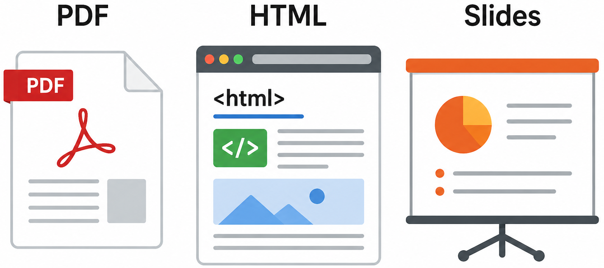

Literate Programming with Quarto
Fresenius University of Applied Science
Scan the QR code or enter the link
madatmeh.github.io
Literate Programming
Is a programming approach that combines code and explanation in a single document. It prioritizes programs to be written for humans first then machines second.
Motivation: 
Quarto
Is an open-source publishing system that supports literate programming by combining code, text, and output in a single document. It allows users to create:

History: Literate Programming
It was Introduced in the early 1980s by Donald Knuth
Computer scientist and author of The Art of Computer Programming.
Developed the concept while writing the book The TeXbook and building the TeX system.
Formalized in his work: Literate Programming (1984) supported alongside tools like WEB (for Pascal) and CWEB (for C).
Advocated that programming is a form of communication and storytelling.
Why Literate Programming Matters
Improves reproducibility (results can always be regenerated)
Reduces errors from copying code or manual steps
Makes analysis easier to understand and share
Combines thinking + coding + reporting
Saves time in long-term projects
Where is Literate Programming Used?
Data science reports
Academic research papers
Business dashboards & analytics
Scientific experiments
Coursework & assignments
The Problem

This leads to repetitive work, high error risk, poor reproducibility and extremely time-consuming.
Core Concept: Literate Programming
Literate programming is the idea of combining:
code (what you run)
data (what you analyze)
output/analysis (results like tables or plots)
documentation (explanations in plain language)
= All in one single document
Example: Understanding Literate Programming
# Documentation:
# This example analyzes student scores to understand overall performance.
# Data:
scores <- c(70, 75, 80, 90, 95)
# Code:
average <- mean(scores)
# Output:
average
# Analysis:
# The average score is 82, indicating that students performed well overall.Historical Tools & Evolution
Early tool: Sweave
It combines R and LaTeX, allowing users to embed code directly within documents for reproducible research.
Evolution: Knitr
Sweave later evolved into knitr, which improved usability, flexibility, and overall performance. This evolution enabled:
Easier customization
Better integration of code, results and narrative text
Modern Tools
Quarto
The latest in literate programming for R is a new tool developed by Posit. It is designed to make creating dynamic documents easier and more organized. It supports:
R
Python
Julia
Using Quarto with R
Step 1: Install required software:
1. R – A programming language for data analysis
2. RStudio – An easy-to-use interface for writing R code and working with documents
3. Quarto – A tool to create documents that combine text, code, and results
4. Git (optional) – Helps track changes and manage versions of your work
Step 2: Install required R Packages:
tidyverse - for data analysis install.packages(“tidyverse”)
knitr - for rendering install.packages(“knitr”)
rmarkdown - for markdown setup install.packages(“rmarkdown”)
tinytex - for PDF support install.packages(“tinytex”) + tinytex:install_tinytex()
Running these commands in R
Simply run these commands in an R console to get started:
install.packages("tidyverse")
install.packages("knitr")
install.packages("rmarkdown")
install.packages("tinytex")
# Install TinyTeX (for PDF rendering)
tinytex:install_tinytex()
# Load libraries
library(tidyverse)
library(knitr)
library(rmarkdown)
library(tinytex)Markdown Ultrabasics
| Feature | Syntax Example | Description |
|---|---|---|
| Heading 1 | # Heading |
Main title |
| Heading 2 | ## Heading |
Section |
| Heading 3 | ### Heading |
Subsection |
| Italic | *text* or _text_ |
Italic text |
| Bold | **text** or __text__ |
Bold text |
| Strikethrough | ~~text~~ |
Deleted text |
| Underline | <ins>text</ins> |
Underlined text (HTML) |
Quarto File Structure (.qmd)
A Quarto document (.qmd) is made up of:
- YAML header → metadata (title, format, author)
- Markdown text → written explanation
- Code chunks → executable analysis
Overall, it combines text, code, and results in one file.
Code Chunks
Are sections where executable code is written inside a document. This is the core feature of literate programming. They allow:
Code execution inside the document
Reproducible results
Combined explanation + output
Code Chunk Options
You can control how code appears using options:
| Option | Effect |
|---|---|
echo: false |
Hide code |
eval: false |
Do not run code |
warning: false |
Hide warnings |
message: false |
Hide messages |
Purpose: Code Chunk Options
These options are used to:
- Improve readability
- Clean up output
- Focus on results instead of code
- Customize document appearance
Example: Code Chunks I
- Content Chunk
## What is Literate Programming?
- Programming is a form of communication
- Code and explanation are written together - Code Chunk
scores <- c(70, 80, 90)
mean(scores)
- Analysis chunk
## Average Score Example
scores <- c(70, 75, 80, 90, 95)
mean(scores)
Example: Code Chunks II
- Image Chunk
{fig-align="Position"}- Speaker Notes
::: notes
Emphasize that the goal is readability, not just execution.
:::Data Analysis Workflow in R
This is the standard workflow in R for data analysis.
Import Data → load data using read_csv()
Clean Data → use dplyr to filter and transform data
Analyze Data → apply statistical methods
Visualize Data → create plots using ggplot2
Full Code Demo
# -----------------------------
# Documentation:
# This example analyzes student exam scores to understand class performance.
# We compute summary statistics and visualize the distribution.
# -----------------------------
# Data:
scores <- c(55, 62, 70, 75, 80, 85, 90, 95, 100)
# -----------------------------
# Code:
mean_score <- mean(scores)
median_score <- median(scores)
sd_score <- sd(scores)
# -----------------------------
# Output:
mean_score
median_score
sd_score
# -----------------------------
# Visualization:
hist(scores,
main = "Distribution of Student Scores",
xlab = "Scores",
col = "lightblue",
border = "white")
# -----------------------------
# Analysis:
# The average score gives an overview of class performance.
# The median shows the central tendency without being affected by extreme values.
# The standard deviation shows how spread out the scores are.
# Overall, the class performance is strong with moderate variation.Exercise
- Task 1: Use the same structure from the demonstration code to analyze a new set of student scores.
New Dataset: scores <- c(48, 52, 67, 73, 78, 81, 88, 92, 96)
- Task 2: Visualize the data.